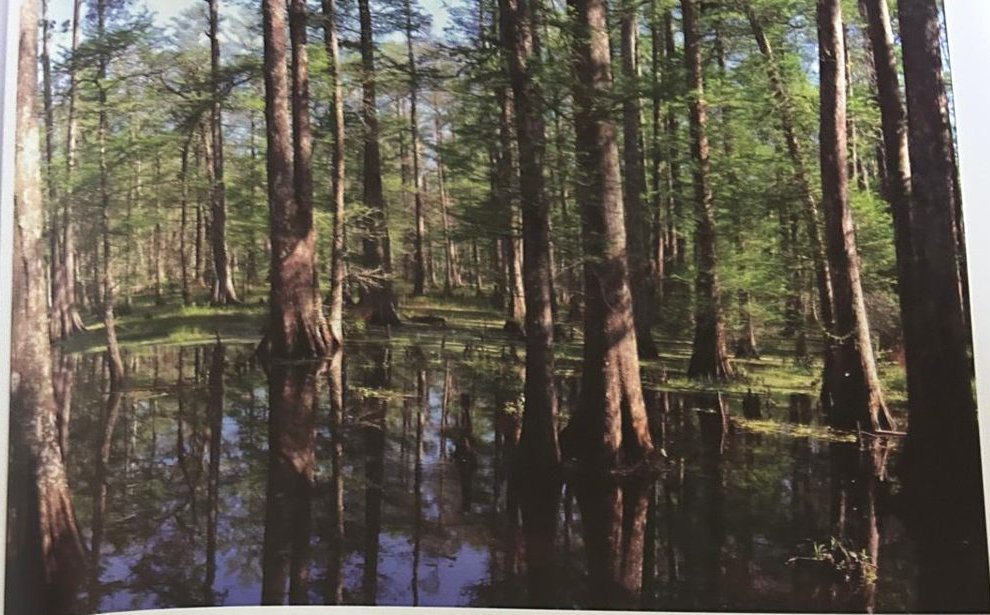

Groepen › Nieuwe Wereld
17. Zuidoost-USA, Benedenstroom Mississippi

De relatief kleine arboretumgroep 17 ligt wat geprangd in het bosmassief tussen de uitgestrekte Groep 16 en een overblijvende enclave van het zomereikenbos dat dit terrein in beslag nam voor het arboretum werd aangeplant. Aan de weiderand staan hier Moerascipressen, die niet alleen aan de benedenstroom van de Mississipi voorkomen, maar ook nog zuidelijker in de bekende Everglades moerassen in Florida. De Wierookden, waarvan hier enkele oudere exemplaren staan, is een dominante soort in de dennenbossen die zich uitstrekken op zurige, kleiige bodems in de zuidelijke en oostelijke kustvlakten van Texas tot Virginia. In de jonge aanplanting bevinden zich Amerikaanse populieren, die naast andere soorten het genmateriaal hebben geleverd van de bij ons veelvuldig gebruikte euro-amerikaanse hybridenklonen. De Grootvruchteik en de Gele kastanje-eik zijn geen typische soorten van de Mississipi vallei, maar ze komen wel voor op de hellingen ten westen daarvan, op het Ozarks plateau in Arkansas, en ten oosten, richting Alabama.
Uit het boek
0,51 ha · 38 soorten · 376 bomen
- De laagvlakte van de Mississippi: moerascipres, tulpenboom, trompetboom en de loblollyden.

Bron: Geografisch Arboretum Tervuren. Een wereldreis rond bomen (2020), p. 164 en volgende.
Deelgroepen
- 17 – Benedenstroom Mississipi, Tennesee & Alabama
Soorten in deze groep (38)
- Taxodium distichumMoerascipres · 56 bomen
- Populus deltoidesAmerikaanse populier · 43 bomen
- Catalpa bignonioidesGewone trompetboom · 32 bomen
- Salix nigra32 bomen
- Quercus macrocarpaGrootvruchteik · 30 bomen
- Juglans nigraZwarte walnoot · 28 bomen
- Carya illinoinensisPecan · 15 bomen
- Quercus coccineaScharlaken eik · 15 bomen
- Quercus velutinaVerfeik · 15 bomen
- Betula nigraZwarte berk · 13 bomen
- Quercus rubraAmerikaanse eik · 13 bomen
- Physocarpus opulifoliusGewone blaasjesvrucht · 10 bomen
- Quercus palustrisMoeraseik · 8 bomen
- Liriodendron tulipiferaAmerikaanse tulpenboom · 6 bomen
- Amorpha fruticosaValse indigostruik · 5 bomen
- Fothergilla major5 bomen
- Morus rubraRode Moerbei · 5 bomen
- Crataegus brachycantha4 bomen
- Pinus taedaWierookden · 4 bomen
- Prunus serotinaAmerikaanse vogelkers · 4 bomen
- Aralia spinosaDuivelswandelstok · 3 bomen
- Aronia melanocarpaZwarte appelbes · 3 bomen
- Crataegus aemula3 bomen
- Crataegus aestivalis3 bomen
- Crataegus berberifolia3 bomen
- Ostrya carpinifoliaEuropese hopbeuk · 3 bomen
- Fraxinus quadrangulata2 bomen
- Gleditsia triacanthosAmerikaanse gleditsia · 2 bomen
- Quercus imbricariaNoordelijke lauriereik · 2 bomen
- Aesculus speciespaardenkastanje · 1 boom
- Cladrastis kentuckeaGeelhout · 1 boom
- Fraxinus species1 boom
- Fraxinus tomentosaViltige es · 1 boom
- Halesia carolinaKleine sneeuwklokjesboom · 1 boom
- Maclura pomiferaOsagedoorn · 1 boom
- Quercus lyrata1 boom
- Quercus muhlenbergii1 boom
- Viburnum recognitum1 boom
Tekst en foto: arboretum-tervuren.be (Koninklijke Schenking), met toestemming gebruikt.